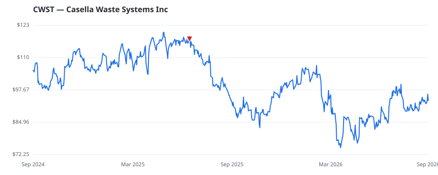

bullish · bearish · n/a — dots: price>SMA10 · SMA10>SMA50 · SMA50>SMA200 · up>down volume (20d)
Utilities · mid cap

Casella Waste Systems Inc is a solid waste removal company, providing resource management services to residential, commercial, municipal, and industrial customers. The company's reportable segments on Geographical basis include Eastern, Western and Mid-Atlantic regions through the Resource solution segment. It generates maximum revenue from the Western region segment. The company's services include Recycling, Collection, Organics, Energy, Landfills, Special Waste as well as Professional Services. REFUSE SYSTEMS · website
| Revenue | $1.8B | Net income | $7.9M |
|---|---|---|---|
| Operating income | $63.7M | Diluted EPS | $0.12 |
| Assets | $3.3B | Equity | $1.6B |
| Fund | Fund alpha vs SPY | Position | % of book |
|---|---|---|---|
| Future Fund LLC | +4% | $2M | 0.6% |
| Highlander Partners, L.P. | +3% | $1M | 0.2% |
Hedge data: SEC EDGAR 13F · ranked funds beat SPY in >50% of their quarters · fund alpha = mirror-portfolio return minus SPY.